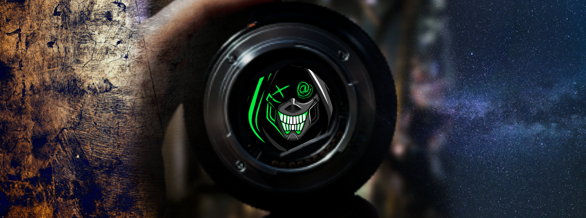

Under Cover Artist
I am deeply passionate about various forms of art, including painting, photography, and digital art. This passion has been a constant thread in the fabric of my life, weaving its way through my experiences and shaping my perspective on the world. For me, art is not just a hobby; it's a means of self-expression and a way to communicate emotions, ideas, and stories that words alone cannot convey.
Painting has always been a source of solace and creativity for me. The act of putting brush to canvas allows me to explore my inner thoughts and feelings, often leading to unexpected discoveries. Whether it's the vibrant strokes of acrylics or the subtle blending of watercolors, each medium offers a unique avenue for artistic expression that I find endlessly fascinating.
Photography, on the other hand, allows me to capture fleeting moments of beauty and significance in the world around me. I am drawn to the way a photograph can freeze time and preserve the essence of a moment, telling a story without the need for words. Whether I'm photographing a stunning landscape, candid portraits, or everyday objects, I strive to find the extraordinary in the ordinary.
In recent years, digital art has opened up a whole new realm of possibilities for my creative expression. The endless array of tools and techniques available in the digital realm allow me to experiment and push the boundaries of my artistic abilities. From digital painting to graphic design, I revel in the versatility and limitless potential that digital art offers.
In essence, my passion for art, painting, photography, and digital art is a driving force in my life. It fuels my creativity, helps me connect with others on a profound level, and enables me to see the beauty in the world in ways that might otherwise go unnoticed. It is a source of joy, fulfillment, and a never-ending journey of self-discovery that I am wholeheartedly committed to pursuing.